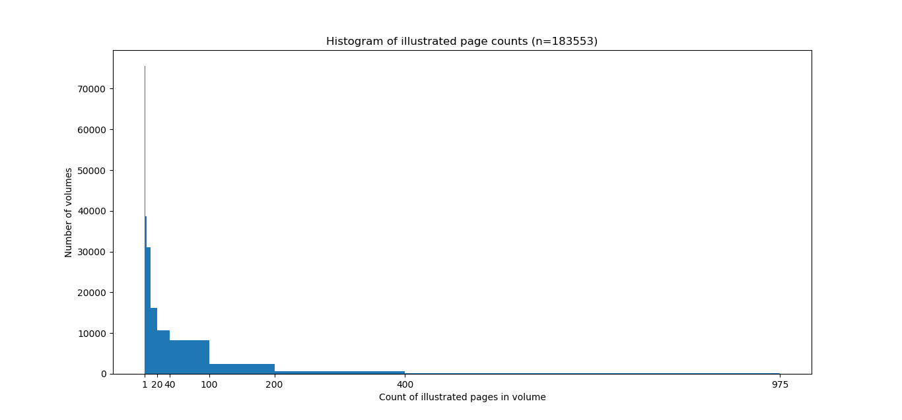

We’ve reached the mid-point of my Advanced Collaborative Support project, “Deriving Basic Illustration Metadata.” Many thanks to Ryan Dubnicek and Eleanor Dickson Koehl for coordinating the project and to Boris Capitanu for his always-stellar technical support.
Right now, sitting on a supercomputer named Big Red at the University of Indiana, is a rather remarkable dataset: every illustrated page from every Google-scanned volume in the HathiTrust Digital Library (HT) for the period 1800-1850. Although the image processing pipeline we are using is not new, working at this scale is.
A working hypothesis of historical studies of illustration is that graphic elements in printed objects exhibit technical and stylistic similarity over time, but this development is uneven. That is to say, illustrations “change with the times” at different rates. On the one hand, the emergence of new techniques like lithography will exert a competitive pressure within the book market and prompt artisans to explore the affordances of the new medium. On the other hand, reuse of woodblocks and other at-hand materials remains appealing for financial reasons. In some cases, a “vintage” style may even be desirable.
Before attempting to characterize this “unevenness” computationally, many smaller steps are necessary. The first step involves putting together a dataset of images that can plausibly represent the breadth of printed illustrations for a period in time. My project’s 50-year sample pushes up against the limits of what can be stored on disk for a project, but HTRC’s resources make possible what would be otherwise unimaginable for a graduate student. Although choosing a start year at the beginning of a century has no direct relationship to innovations in image production, fifty years is roughly the length of a Kondratiev cycle. At the very least, five decades should generate plenty of real historical signal.
What do I mean by “signal”? At the end of the project, each illustration in the dataset will be encoded as a vector of numbers. This allows for calculating similarities between images. All other things being equal, we would expect similar images to loosely correlate with each other in time. By building “nearest neighbor” maps for certain types of images, we can test whether this is the case and also discover moments of aesthetic anachronism, when older styles reappear.
The following sections discuss our progress, making some detours to discuss problems that future researchers may face when using HathiTrust for image rather than text analysis.
Choose a Subset of Volumes
There were 500,013 qualifying volumes (as of August 2019) in HT for the first half of the nineteenth century. To come up with this list of unique volume ids, I filtered the latest HathiFile by date range (1800-1850), media type, (text) and scanning institution (google). I chose this date range because it is both relevant to my own research and because it precedes the explosion of illustrations in the second half of the nineteenth century (due in large part to half-tone printing and photography).
The vast majority of volumes for this period have been scanned as part of the Google Books project; we opted for this restriction because Google-scanned books come with some extra metadata that is useful for identifying illustrated pages. I did not perform any deduplication of volume titles.
Takeaway: Warning! HathiFiles are roughly a Gigabyte in size–far too large to read into memory with a Pandas method like .read_csv(). Parsing the file in chunks is the way to go (it still takes ~15 min on my i7 laptop). Writing your own script to do this is a useful exercise if you plan on working with large quantities of HathiTrust data.
Train the Classifier
The first stage of the project relies on a retrained convolutional neural network. The purpose of the model is to classify whether an input page image belongs to one of the desired classes: inline_imageor plate_image. Inline images are integrated into the text of a page; plates are typically larger and occupy the entire page (in some cases they are tipped-in). Multi-page spreads and foldouts are too infrequent to merit their own class.
I have an article in revision that describes the creation and validation of such schema/models in detail. I have previously discussed user-friendly approaches for downloading images from HathiTrust and Internet Archive that are likely to be illustrated in the first place. In this post, I simply want to disclose the model I retrained with.
From a previous image extraction project with the Medical Heritage Library, I had a 12 Gb (compressed) worth of 19C training data. I uploaded these zipped images to a Google Cloud Bucket and from there transferred them to a Google Cloud Platform (GCP) instance with a NVIDIA Tesla P4 GPU. At that point, I used an off-the-shelf PyTorch CNN trained on ImageNet (resnet50) to reach ~94% accuracy on a held-out test set.
| 0 |
1.004580 |
0.294468 |
0.081882 |
02:43 |
| 1 |
0.515574 |
0.201986 |
0.057491 |
02:41 |
| 2 |
0.367785 |
0.186820 |
0.059233 |
02:40 |
| 3 |
0.306216 |
0.187071 |
0.055749 |
02:39 |
Takeaway: When it comes to deep learning, try to use the collective knowledge an active community of experimenters. That’s why I chose to use fast.ai’s PyTorch library for model training. Fast.ai provided detailed installation guides for working with GCP; the forums are invaluable for troubleshooting. Be warned though: using the cloud (especially as a free user) comes with its own set of headaches. One week, the default us-west2-b datacenter was largely unavailable. This meant no access to the Jupyter notebooks from which I was running training.
Filter with Model
The trained model is saved as a serialized PyTorch object. When loaded, it provides a predict() method that returns the estimated class of the input image. Boris deserves all the credit for installing the necessary libraries (quite a headache as it turned out) and parallelizing the code.
To run inference on the 500,013 volumes, we first needed to:
- Acquire volume subset from HathiTrust (in pairtree structure)
- Parse through metadata for each volume to find all pages tagged with
IMAGE_ON_PAGE (a tag generated by Google from OCR data)
- Unzip the fold of JP2 image assets
Then Boris ran inference with a pool of threads on Big Red, keeping the pairtree directory structure and deleting all volumes/assets that were not of the desired classes (we decided to keep the OCR transcriptions for illustrated pages, in case future projects explore image captions).
When the job finished, the set of volumes was winnowed down to 183,553. This means that, according to the model, roughly (183,553 / 500,013 * 100) = 37% of early-nineteenth century books contain one or more illustrated pages. The results of stage one were summarized in a 228 Mb JSONL file by Boris.
Takeaways: Parallelism is absolutely vital for running large jobs such as this in days instead of weeks or months. Careful thought is required regarding when to convert image formats. The JP2 format was designed for archives and is used by most HT partners. Unfortunately, it is proprietary and not supported by most machine learning libraries, including PyTorch. Thus we needed to convert to JPEG on the fly.
Converting back and forth between JP2 and JPEG or PNG has been a source of endless frustration. The following are two of the simplest solutions I have found.
On Windows, with the package imageio installed, you can download the necessary codecs for JP2 within an interactive session in the Python REPL. N.B. the freeimage download does not seem to work in the Data Capsules.
python
> import imageio
> imageio.plugins.freeimage.download()
Here’s what I’ve been using on Ubuntu (within a maintenance mode HTRC Data Capsule):
# may need to install dependencies...
sudo apt-get openjpeg-tools
# See: https://github.com/uclouvain/openjpeg/wiki/DocJ2KCodec
# not possible to directly convert to JPEG; need to send to a lossless format like PNG
opj_decompress -i <image>.jp2 -o <image>.png
Initial Results
Of this set of probably-illustrated volumes, there were 1,922,725 individual pages estimated by the model to feature illustrations. That is to say, subject to survival bias and Western-centric library practices, the historical-bibliographical record for the early nineteenth century consists of about two million printed illustrations.
At this point, we can compute some basic statistics. The average number of illustrated pages for a book in this set was 10.5. The median number of illustrated pages was 2. The most common number (mode) of illustrated pages per volume was 1 (e.g. only a title page or frontispiece is illustrated).
The maximum count was 975. Extreme outliers are worth exploring, since they can reveal faulty assumptions about the data. In this case, the count is associated with the first three volumes (1847-49) of the French-language children’s periodical L’Image. Revue mensuelle illustrée d’éducation d’instruction et de récréation. The University of California’s bundling of Vols. 1-3 has 1208 total page images. In general, outliers are periodicals. If we were trying to clean up counts, we would split this into three volumes and try to (1) deduplicate and (2) standardize periodical groupings (by year, for instance). But this project is simply trying to get at the images, so the per-volume counts don’t matter all that much.
The histogram shows the distribution of illustrations: overwhelmingly, even books that are illustrated will have single-digit illustrations (most often just one or two).
Here’s a montage of about 500 of the images from stage one, courtesy of Damon Crockett’s ivpy Python package:
Next Steps for Stage Two
- Get bounding boxes for the images (another CNN)
- “Fingerprint” the images with difference/perceptual hash or simply by using the last fully-connected layer from their representation in the stage-two neural network.
- Define some simple experiments to assess which method is best for non-photorealistic images from historical books
- Build a lookup tree of nearest neighbors
- Select a few clusters of stylistically similar images and historicize/Interpret!